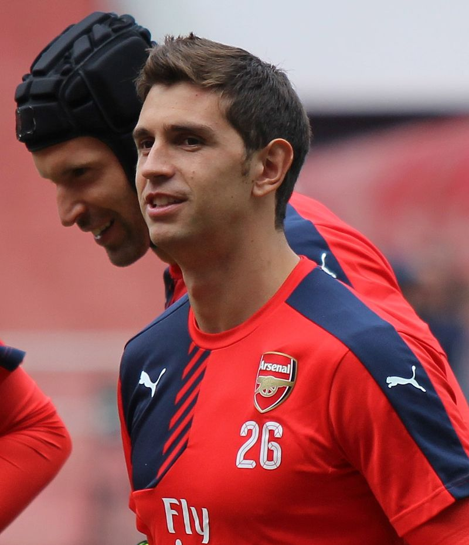
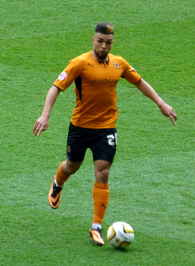
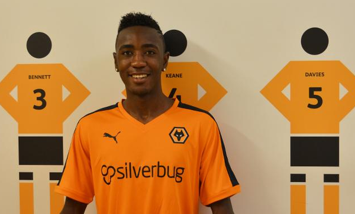
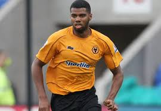
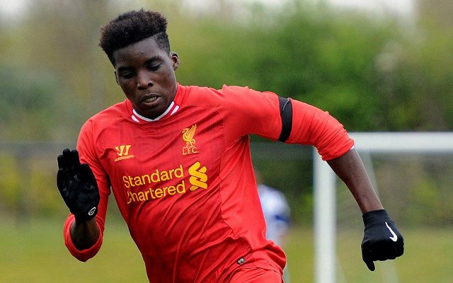
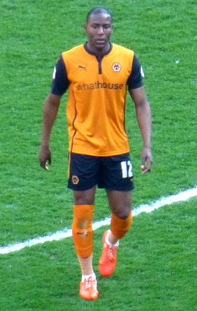
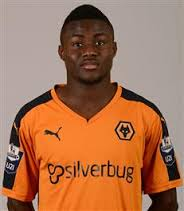

Position:GoalKeeperInternational:Argentina DOB:2 September 1992He is on loan from Arsenal.
Position:DefenderInternational:IrelandDOB:16 January 1992

Position:DefenderInternational:EnglandDOB:29 Feburary 1988

Position:DefenderInternational:FranceDOB:25 April 1997He was born in Cameroon, but began his profession as a footballer in france since under-18 level.

Position:DefenderInternational:EnglandDOB: 16 December 1992
Position:DefenderInternational:EnglandDOB: 5 June 1992

Position: MidfielderInternational:EnglandDOB:19 June 1997 He is on loan from Liverpool.
Position: MidfielderInternational:ScotlandDOB:4 June 1988

Position:StrikerInternational:EnglandDOB:12 Feburary 1993
Position:StrikerInternational:EnglandDOB: 2 December 1986He is on loan from Cardiff City.

Position:StrikerInternational:NigeriaDOB: 8 Feburary 1998